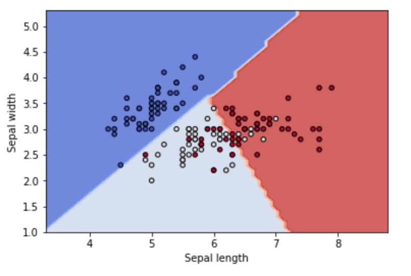

3.2 特征处理——降维
关于降维的讨论主要是来源于“维度灾难”, 这个是数学家理查德-贝尔曼提出的。
当所有参数是已知的时候，维度的增加可以让分类问题的错误率渐近为0.
当未知参数只能根据有限样本来估计时，维度的增加使错误率先降低后增加，最终收敛到0.5
维数灾难的本质原因在于数据样本的有限性。而在数据有限的条件下，去解决维度问题，自然的方法就是去降维。降维的方法有很多
1. 常用的线性降维方法：
- PCA 主成分分析
- IDA
- LDA
2.非线性的方法——流形
流形
是指嵌入在高维空间中的低维子空间，它的维度是低维数据变化的自由度。（比如地球仪的球面，虽然它是在一个三维空间中，但其实是一个二维的地图卷曲而成，\(x^2+y^2+z^2=1\)，维度是2）
流形学习
就是通过挖掘数据的内在结构实现向故由维度的转化，找到对应的低维嵌入流形。其大部分是非线性的、非参的。所以相比线性方法有更强的表达能力，但是同时对噪声更加敏感。
流形学习方法
流形学习，首先需要确定低维流形的结构，然后是高维到低维的映射关系。实际中因为都未知，所以需要做一些假设。
- 多维缩放MDS (multi dimensional scaling)
原则:让高维空间上样本之间的距离在低维空间中尽量保持一致以距离重建的误差最小为优化目标。
具体来说：
(1) 对于原始的数据\(X_{np}\),首先可以计算出任何两个样本之间的距离，从而构造出一个距离矩阵\(D\)，MDS算法的目的就是根据距离矩阵，寻找向量\(Z_1,Z_2...Z_k\),使得\(||Z_i-Z_j||≈\sigma_{ij}\)
假设\(Z\)是经过中心化处理过的，即\(\sum z_i = 0\) , 则有
\[XX^T = D≈ZZ^T\]
看到这个形式，应该就能明白怎么取解了。对D做特征分解\(D=VAV^T\)， V是对应的特征向量，我们选择前k个特征值比较大的作为最终的降维维度即可。
问题：高维空间的距离与低维空间距离保持一致这个假设是否合理？
以地球仪的球面为例，三维空间中两个点的距离和平面中两个点的距离显然是不一样的。三维空间中如果用欧式距离去度量那么北京与纽约的距离是连接两点的直线，而在平面上他是一条曲线。
# MDS
mds = manifold.MDS(n_components, max_iter=100, n_init=1)
Y = mds.fit_transform(X)
下面再说一些以几何性质作为同构基础的降维方法
- 等度量映射Isomap
等度量映射，以数据所在的低维流形与欧式空间子集的等距性为基础。描述距离的是测地距离，即流形上两点的真实距离。测地距离的近似计算方法：近邻点之间的欧式距离近似为近邻点之间的测地距离。
通过对每一个近邻点建立连接，就可以让所有数据点共同构成一张带权重的近邻连接图。这样在这张图上任意两个点的测地距离就相当于是两点之间的最短路径。可以用图论中的Dijkstra算法求解。
当计算出距离后，剩下的处理方法和MDS一致。所以总的来说包括三步：
(1) 最近邻搜索
(2) 最短路径搜索
(3) 部分特征值分解
model = manifold.Isomap(n_neighbors, n_components)
Y = model.fit_transform(X)
- 局部线性嵌入LLE(local linear embedding)
想法：待求解的低维流形在局部上是线性的，每个点可以表示成近邻点的线性组合。而局部线性嵌入就是在求解流形的过程中保持每个领域中的线性系数不变的基础上重构原数据点。
详细的推导过程https://blog.csdn.net/yukgwy60648/article/details/54578141
# 其中method可选 ['standard', 'ltsa', 'hessian', 'modified']
model = manifold.LocallyLinearEmbedding(n_neighbors, n_components, eigen_solver='auto', method=method)
Y = model.fit_transform(X)
从概率角度
- 随机近邻嵌入 SNE
随机近邻嵌入的特点：保持数据降维前后的概率分布不变,他将高维空间中的距离首先映射到了一个服从正态分布的条件概率上。这个概率描述了不同数据点之间的相似性。
\[p_{j|i}=\frac{exp(-||x_j-x_i||^2/2\sigma^2_i)}{\sum_{k\ne i}exp(-||x_k-x_i||^2/2\sigma^2_i)}\]
映射到低维空间后，按照同样方式计算条件概率，希望连个概率分布尽量一致。这里是KL散度最小化
\[KL(P||Q) = -\sum P_i ln(\frac{P_i}{Q_i})=-\sum P_i(ln(P_i)- ln(Q_i))\]
问题：
KL距离是不对称的，会导致相聚较远的点出现较大的散度差。为了是KL距离最小化，数据就会被压缩到极小的范围，产生拥挤问题。
改进
- 将KL散度改为对称形式 \(p_{ij}=p_{ji}=(p_{i|j}+p_{j|i})/2\)
- 令低维空间中的条件概率服从t分布，t分布有长尾效应，从而使高维中分布较远的点降维后也能区分开
tsne = manifold.TSNE(n_components=n_components, init='pca', random_state=0)
Y = tsne.fit_transform(X)

小结
本章主要知识结构

sklearn中关于流形学习内容都在
sklearn.manifold模块。
官网示例 http://sklearn.apachecn.org/cn/0.19.0/auto_examples/manifold/plot_compare_methods.html#sphx-glr-auto-examples-manifold-plot-compare-methods-py参考文档
https://blog.csdn.net/yukgwy60648/article/details/54578141
sklearn—文档 http://scikit-learn.org/stable/modules/manifold.html
http://sklearn.apachecn.org/cn/0.19.0/modules/manifold.html
FM 工具
1.deepCTR
学习地址 https://github.com/babakx/fm_tensorflow
1. 环境包安装
安装tensorflow
2.试运行
这个是用tf实现的FM
https://www.jianshu.com/p/152ae633fb00
- 试运行成功
- 了解原理
小数据集版本（进入tf的仍然是dense矩阵，只适合小数据）
https://github.com/babakx/fm_tensorflow
大数据量版本
3.原理
PYTHON版本的包实现方式
- LibFM
- libFFM
- xLearn
- tffm
目前在python中的支持FM相关的包主要有
__
1.libFM
官网 http://www.libfm.org/
github https://github.com/srendle/libfm
从官网下载安装包
tffm
tffm是FM方法的tensorflow版本，他支持：
- dense or sparse输出
- order >= 2
# 安装
pip install tffm
按照github上的example
log
todo:
- 调整参数k， int_std, red
- 统一 content_len的量纲
- 文章添加关键字
- tffm，添加field
4.3 支持向量机
支持向量机属于上一节中说的硬输出的方法，是从几何角度出发考虑的。
在介绍SVM之前，先解释一下几个基本概念。

函数间隔与几何间隔
一般的，一个点距离分离超平面的远近可以标识分类预测的确信程度。当超平面\(wx+b=0\)确定后，\(|wx+b|\)的大小能够相对的表示远近，而\(wx+b\)的符号与\(y\)类别是否一致则可以表示是否分类正确。
\[d_i = y_i(wx_i+b)\] 定义函数间隔\(d = \min d_i\)
但是很明显的会发现这个间隔与\(w\)的量纲是有关系的，\(kw+kb\)与之前超平面是一样的，但是间隔却差了k倍。因此需要几何间隔
\[d_i = y_i(\frac{w}{||w||}x_i+\frac{b}{||w||}), d = \min d_i\]
间隔最大化
有了前面关于间隔的定义，或者是关于分类距离的定义，就有了目标。SVM的目标就是: 求解能够将数据集正确划分并且几何间隔最大的分离超平面。
注：对于线性可分的数据，超平面有无数个(等价于感知机)，但是间隔最大的只有一个。间隔最大其实是两个要求:
- 能尽可能的将正负例区分开
- 对于难分的点(距离平面较近的点)也有很好的置信把握，即泛化能力会好一些
SVM对应的三种问题类型
根据分类问题，可分为以下三种
- 线性可分与硬间隔最大化
- 线性支持向量机与软间隔最大化
- 非线性支持向量机与核函数
这些会在下面中进行详细介绍
支持向量
这个需要看完下面关于三部分的介绍之后，再来了解这个概念。
- 在线性可分的情况下，样本中与超平面距离最近的样本点称为支持向量. 支持向量是满足\(y_i(wx_i+b)-1=0\)的点。
- 分隔边界最终只是由支持向量的点决定的，其他距离比较远的点并没有影响。
1.线性可分与硬间隔最大化
先讨论一种最简单的情况，当数据集本身可以线性可分时候(实际数据中可能并没有这么好的性质)，我们只要找到对应的超平面即可。从前面的集合图形上我们的目标：希望每个点到超平面的间隔的最小值达到最大，即\(max min d_i\)
数学模型：\[max_{w,b} d(几何间隔)\]
\[s.t \quad d_i = y_i(wx_i+b)>= d, i=1,..n\]
因为几何间隔\(d=d'/||w||\)，所以原问题等价于
\[max_{w,b} \frac{d'}{||w||}\]
\[s.t \quad d_i = y_i(wx_i+b)>= d', i=1,..n\]
注意到
- 函数间隔的取值\(d'\)并不影响最优解\(w,b\)的求解。(如果w,b是最优解，则\(kw,kb\)也是，函数距离就是\(d'\)和\(kd'\))。所以这里可以取\(d'=1\)。
- \(1/||w||\)与\(\frac{1}{2}||w||^2\)是等价的
因此最终优化的问题等价于如下的凸二次规划问题：
\[min_{w,b} \frac{1}{2}||w||^2\]
\[s.t \quad d_i = y_i(wx_i+b) -1 >=0, i=1,..n\]
解法：关于这个优化问题的解法，在后面会详细给出。可以证明这个解是存在且唯一的。
几何角度
- 过两个类的边界的点的平行线(\(wx-b=1, wx-b=-1\))，有点类似于楚河汉界
- 将两条平行线进行旋转，保证同类划分不变。两者距离就会改变
- 落在两个平行线上的异类点就是支持向量

2.线性支持向量机与软间隔最大化
上一节说的是对线性可分数据的，如果数据本身不可分该怎么办呢，此时线性分割必然存在误分类的点？对于线性不可分我们不可能要求其严格满足上面说的不等式约束。这时我们只能退而求其次：
思路：使得之前的几何间隔尽量大，同时使误分类的个数尽可能少
数学表示：对于每个样本，类似运筹学中的方法我们可以引入一个松弛变量\(\xi_i\ge 0\),满足\(y_i(wx_i+b)\ge 1-\xi_i\) 之前是要求一定要大于等于1，现在因为并不完全可分，所以不一定要大于等于1。
数学模型：
\[min_{w,b} \frac{1}{2}||w||^2 + C\sum_1^n \xi_i\]
\[s.t \quad y_i(wx_i+b)>=1-\xi_i, i=1,..n\]
\[\xi_i >= 0\]
这时候其实可以发现线性可分的相当于是这里的一种特殊情况，即\(\xi_i=0\)
求解：
该优化问题的拉格朗日函数是
\[L(w,b,\xi,\alpha,u)=\frac{1}{2}||w||^2+C\sum\xi_i-\sum\alpha_i(y_i(wx_i+b)-1+\xi_i)-\sum u_i\xi_i\]
因此原问题等价于 \[\max_{\alpha,u}\min_{w,b,\xi}L\]
（1）首先求L对\(w,b,\xi\)的极小

可得\[\min_{w,b\xi}L=-\frac{1}{2}\sum_{i=1}^n\sum_{j=1}^n \alpha_i\alpha_jy_iy_j(x_i*x_j)+\sum_{i=1}^n\alpha_i\]
(2) 再对\(\min L\)求最大，即有
\[\max_{\alpha}-\frac{1}{2}\sum_{i=1}^n\sum_{j=1}^n \alpha_i\alpha_jy_iy_j(x_i*x_j)+\sum_{i=1}^n\alpha_i\]
\[s.t.\quad \sum\alpha_iy_i=0\]
\[C-\alpha_i-u_i>=0;\alpha_i>=0;u_i>=0\]
最后一个条件其实等价于\(0\le\alpha_i\le C\)
对于线性可分问题其max函数是一样的，只是约束条件是\(0\le\alpha_i\)
【定理】若\(\alpha^*=(\alpha_1^*,...\alpha_n)\)是上述优化问题的一个解，若存在一个分量\(0<\alpha_j^*<C\)，则原始问题的解可按如下形式求得
\[w^* = \sum\alpha_i^*y_ix_i\]
\[b^*=y_j-\sum_{i=1}^n y_i\alpha_i^*(x_i*x_j)\]
从中可以发现b的解并不唯一。
最终的分离超平面是\[\sum\alpha_i^*y_i(x_i*x_j)+b^*=0\]
分类的决策函数是\[f(x)=sign(\alpha_i^*y_i(x_i*x_j)+b^*)\]
几何解释
- 如果在分解边界上，则\(\xi_i=0\),距离是1
- 如果是在两个分界边界中间，\(0<\xi_i<1\)
- 越过分界边界，到了另外一边，\(\xi_i >1\) 这个时候\(y_i(wx_i+b)\ge 1-\xi_i\)是小于0的，属于误分类，在优化的时候会考虑

合页损失函数：与原优化问题等价的一种损失函数形式
\[\min_{w,b} \sum[1-y_i(wx_i+b)]_{+}+\lambda||w||^2\]
3.非线性支持向量机与核函数
当数据的分布呈现的是一种非线性的时候，用之前的线性分割的方法肯定就会出现问题。比如数据是在一个椭圆内外分布，这个时候就需要先对原始数据做一个映射，\(x_1^2,x_2^2\)然后变成线性可分的。而这里主要用到了核技巧。
【核函数】如果存在一个映射\(\phi(x):X-> H\),使得对于所有\(x,z\in X\),函数\(K(x,z)\)满足
\[K(x,z)=\phi(x)*\phi(z)\]
则\(K(x,z)\)为核函数，\(\phi(x)\)为映射函数。
核函数的想法是：在学习中值定义核函数，而不显示的定义映射函数，通常映射函数不太好找且不唯一。
在支持向量机中的应用：
如前所述，在支持向量机的对偶问题中，只涉及样本之间的内积运算。\[W(\alpha)=\max_{\alpha}-\frac{1}{2}\sum_{i=1}^n\sum_{j=1}^n \alpha_i\alpha_jy_iy_j(x_i*x_j)+\sum_{i=1}^n\alpha_i\]
因此可以用核函数代替
\[W(\alpha)=\max_{\alpha}-\frac{1}{2}\sum_{i=1}^n\sum_{j=1}^n \alpha_i\alpha_jy_iy_jK(x_i,x_j)+\sum_{i=1}^n\alpha_i\]
常用的核函数
- 多项式核函数 \(K(x,z)=(x*z+1)^p\)
- 高斯核函数 \(K(x,z)=exp(\frac{-||x-z||^z}{2\sigma^2})\)
- 字符串核函数
优化算法SMO
前面介绍了SVM中的三类问题，最终都是通过一个凸二次规划进行求解。当样本量较大的时候，SMO是一种相对求解较快的方法。简言之，是采用了启发式算法，每次只更新两个\(\alpha_i,\alpha_j\)
https://www.cnblogs.com/nolonely/p/6541527.html
Sequential Minimal Optimization A Fast Algorithm for Training Support Vector Machines
代码
sklearn.svc模块 http://scikit-learn.org/stable/modules/svm.html#svm
主要包含
- SVC 标准的
from sklearn import svm
X = [[0, 0], [1, 1]]
y = [0, 1]
clf = svm.SVC()
clf.fit(X, y)
以iris数据为例
### iris数据
from sklearn import datasets, svm
import matplotlib.pyplot as plt
import numpy as np
iris = datasets.load_iris()
X = iris.data[:, :2]
y = iris.target
# model
C = 1.0
model = svm.SVC(kernel='linear', C=C)
model.fit(X, y)
## 绘制可视化图
x1 = X[:,0]
x2 = X[:,1]
h=0.1
x_min, x_max = x1.min()-1, x1.max()+1
y_min, y_max = x2.min()-1, x2.max()+1
xx,yy = np.meshgrid(np.arange(x_min, x_max, h),
np.arange(y_min, y_max, h)) #生成对应的坐标矩阵
Z = model.predict(np.c_[xx.ravel(), yy.ravel()]) # 在新的坐标点上预测分类
Z = Z.reshape(xx.shape)
plt.contourf(xx, yy, Z, cmap=plt.cm.coolwarm, alpha=0.8)
plt.scatter(x1, x2, c=y, cmap=plt.cm.coolwarm, s=20, edgecolors='k')
plt.xlabel('Sepal length')
plt.ylabel('Sepal width')

- NuSVC 与SVC的优化目标函数略微不同
- LinearSVC： 只针对linear kernel
在进行多分类的时候SVC中参数decision_function_shape可以选择是ovo还是ovr
LinearSVC是通过参数multi_class进行选择，
小结

1. 数据可视化概述
目标: 系统的梳理在进行数据分析的时候，如何进行数据可视化。具体操作的时候以python的seaborn包为主。
在进行数据分析的时候，经常需要进行数据可视化。俗话说一图胜千言，如何将从数据中发现的结论以一种简单易懂、形象化的方式展现出来，是很考验数据分析人员的能力的。
1 方法部分
数据可视化，首先是要有数据，即我们的研究对象，而可视化的功能就是将数据中蕴含的关系或规律以图形的形式展示出来。 因此在进行数据可视化之前，一定要搞清楚的两件事：
- 数据类型， 即我们要研究的实体是什么类型的
- 数据要传递的信息以及要展示的关系
(1) 数据类型
不同的数据类型适合的图形表现是不同的，随着现在数据分析应用的越来越广泛，数据类型随着其应用的场景不同也是越来越多。统计学传统意义上的数据类型主要是：
- 分类型变量：比如性别
- 连续型变量：比如年龄
除了传统的这种之外，还有比如轨迹数据，视频数据等等
(2) 数据之间的关系
| 关系 | 示例图形 |
|---|---|
| 比较大小，包括不同个体或者分组之间 | 常用的比如将面积、尺寸进行可视化。条形图、面积图 |
| 数据的集中程度 | 一般是热力图，比如地图上交通的拥挤程度 |
| 地理信息 | 地理位置数据 |
https://zhuanlan.zhihu.com/p/25632363
2 工具部分
在实际操作中可能会涉及的使用工具有如下几种
- Excel
excel作为微软office的办公软件，适合一些相对简单的数据分析，其本身包含的绘图功能基本上可以覆盖一些常用的需求。比如一些基本的绘图、数据分析功能。除此之外，excel还可以自己增加一些插件，比如功能强大的 power Map https://support.office.com/zh-cn/article/power-map-%E5%85%A5%E9%97%A8-88a28df6-8258-40aa-b5cc-577873fb0f4a
适合展示一些需要进行地图可视化的数据，比如分省份的销售额，
其还可以制作随时间变化的动态小视频，比如人的轨迹变化等等。
- 可视化BI
比如Tableau， power BI， FineBI等常见的一些可视化软件
- 编程工具-python & R
R的ggplot应该是多数统计学家们使用的绘图工具，python中常用的基础绘图pacakge是matplotlib，以及在其基础上衍生出来的比较炫酷的 seaborn，其操作命令比较简单。有点类似R中的ggplot.
python版本的echarts包：http://pyecharts.org/#/zh-cn/intro
- 工具平台
蚂蚁金服 https://antv.alipay.com/zh-cn/vis/chart/color-map.html
百度的echarts
参考资料
https://blog.csdn.net/suzyu12345/article/details/69029106
seaborn
pyecharts https://github.com/pyecharts/pyecharts
2.echarts接口
pyecharts
http://pyecharts.org/#/zh-cn/charts?id=treemap%EF%BC%88%E7%9F%A9%E5%BD%A2%E6%A0%91%E5%9B%BE%EF%BC%89
Copyright © 2015 Powered by MWeb, Theme used GitHub CSS.